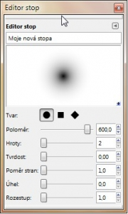
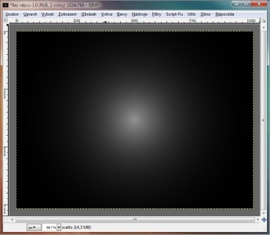
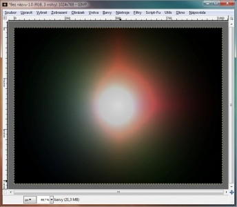
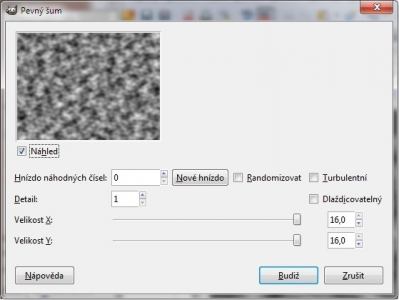
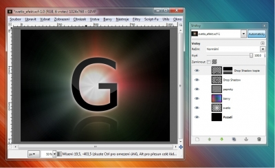
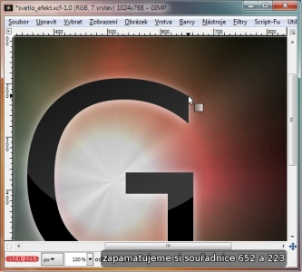
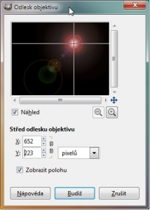

Web je již jen v režimu pro čtení a není možné přidávat nové komentáře nebo dotazy do fóra. Díky za přízeň.
Main menu
You are here
Add new comment
Hrátky se světlem
13. January 2011 - 16:55 — Lukáš- Vytvoříme nový obrázek s rozměry 1024×768px a vyplníme ho černou barvou
- Vytvoříme si novou stopu. Otevřeme si tedy, pokud nemáme okénko „Stopy“, buďto klávesovou zkratkou CTRL +Shift + B, nebo přes nabídku Okno → Připojotelné dialogy → Stopy v menu.
- V okně „Stopy“ klepneme na tlačítko „Nová stopa“ (ikonku papírku).

- Naši novou stopu nastavíme takto:
 - Vytvoříme novou vrstvu. Nazveme ji „Světlo“
- Pokud máme vytvořeno, zavřeme okno s editorem stop. Barvu popředí si nastavíme na bílou. Vybereme si nástroj štětec a klepneme do středu obrázku. Krytí* vrstvy nastavíme na 60%.
 - Nyní do obrázku přidáme nějaké barvy. Vytvoříme novou vrstvu s názvem „Barvy“. Přejdeme na nabídku Filtry → Vykreslení → Mraky → Plazma. Turbulence nastavíme na 0,1. Vrstvě nastavíme režim na „Dělit“.** Krytí nastavíme na 65%.
 - Nyní do obrázku přidáme světelné paprsky. Vytvoříme novou vrstvu s názvem „paprsky“. Přejdeme na Filtry → Vykreslení → Mraky → Pevný šum. Velikost X a Y nastavíme na 16.
 - Přejdeme na Filtry → Rozostření → Pixelizovat. Šířku nastavíme na 5px. A výšku stejnou, jako výšku našeho obrázku, tedy 768px.***

- Teď přejdeme na Filtry → Zkreslení → Polární souřadnice kde obě hodnoty nastavíme na 0. Vrsvě paprsky nastavíme režim „Extrakce Zrnitosti“.
- Nyní už zbývá jen do obrázku něco napsat. Zvolíme písmo Sans černé barvy, velké 490px. Napíšeme třeba G jako Gimp :-). Pomocí nástroje „Zarovnání“ jej vycentrujeme.

- Přejdeme na Filtry → Světlo a Stín → Vržený stín a nastavíme jej takto:

- Přidáme další odlesk, tentokrát na písmeno. Klepneme na vrstvu s písmenkem (V mém případě G) pravým tlačítkem a zvolíme „Alfa do výběru“. Vytvoříme novou vrstvu, nazveme ji třeba „odlesk-pismeno“. Zvolte nástroj Elipsa (E). a stisknětě Shift + CTRL (tím nastavíte režim na „Průnik aktuálním výběrem“). Označte horní část písmene. Vyberte si nástroj Přechod (L). Nastavte jej na „Popředí do průhlednosti“ a vyplňte výběr. Dle libosti snižte krytí vrstvy „odlesk-pismeno“.
- Sloučíme písmeno s jeho stínem a odleskem, sloučeninu duplikujeme pomocí klávesové zkratky CTRL + D.
- Duplikovanou vrstvu nástrojem Překlopení (Shift + F) svisle překlopíme a posuneme dolů, pod původní písmeno.

- Vrstvě přidáme masku (Vrstva → Maska → Přidat masku vrstvy). Vybereme nástroj Přechod. Barvu popředí nastavíme na černou, barvu popředí na bílou. Přechodem od spodu přetáhneme vrstvu, tím získáme odlesk.
 - Vytvoříme novou vrstvu s názvem „Odlesk objektivu“. Vrstvu umístíme nad písmeno a vyplníme ji černou. Režim vrstvy nastavíme na „Závoj“ Kurzorem najedeme na pravý horní rožek písmena a zapamatujeme si souřadnice, které nám Gimp zobrazí.
 - Přejdeme na Filtry → Světlo a stín → Odlesk objektivu a tyto souřadnice zadáme.
 - Hotovo :-)


{kind=link}
{kind=link}
{kind=link}
{kind=link}
{kind=link}
{kind=link}
{kind=link}
*Krytí se nastavuje v okénku Vrstvy. Pokud okénko nevidíte, vyvolejte jej pomocí klávesové zkratky CTRL + L
**Režim se nastavuje v okénku Vrstvy. Pokud okénko nevidíte, vyvolejte jej klávesovou zkratkou CTRL + L
***Aby se hodnoty automaticky nenastavovali shodně, nesmí být svorka v okénku scvaknutá
XCF soubor: hratky_se_svetlem.xcf
Kategorie:
Web je již ukončen. Nebude zde přibývat žádný nový obsah. Případné dotazy prosím na l.bacovsky(a)outlook.cz